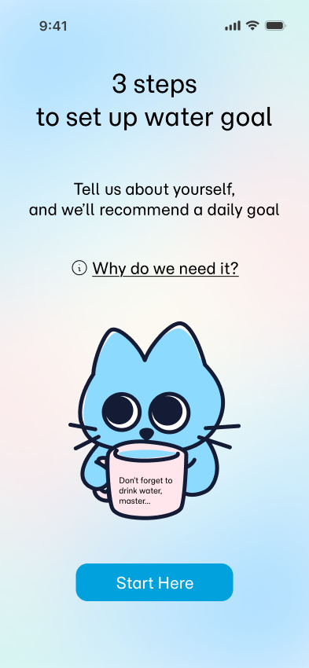
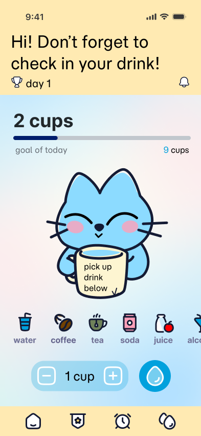

Logging has to cost almost nothing
1tap
Testing showed high interaction costs were driving users away, so logging a drink was cut to a single tap on the home screen.
Case study · Mobile app
A habit-forming hydration companion designed to make water tracking engaging.


Overview
Hydrated Cat pairs a lightweight, one-tap tracking flow with a character-driven companion that reacts to a user's habits in real time, turning a purely functional task into something people actually want to check in on.
I led the project end to end, from early user interviews through two rounds of usability testing to a finished, animated prototype.
Problem statement
Generic reminders get ignored until people give up on them entirely.
Make tracking effortless and rewarding, so hydration becomes a habit people want to keep.
Research
Interviews and two rounds of usability testing kept pointing to the same three fixes.
Testing showed high interaction costs were driving users away, so logging a drink was cut to a single tap on the home screen.
Users said the static version felt flat and transactional, so the Cat now gives emotional feedback, smiling on hydration.
Testers hesitated to share biological data, so onboarding was rewritten to explain upfront why it's needed.
Personas
Two personas emerged from interviews and usability testing.
Emily
Sustained Vitality: Maintaining energy for work and exercise.
False Productivity: Thinks stopping to fetch water is a "waste of time," prioritizing output over her own biology.
Often goes 6+ hours without a sip during back-to-back meetings, then "binge drinks" at night.
Alexander
Needs a psychological reward to make the boring act of drinking water feel satisfying.
Feels boring to record drinking.
Prioritizes taste over hydration, often choosing soda or flavored lattes because plain water feels "boring."
Prototype
Outcomes
Cut logging to a single tap
on the home screen, after testing showed high interaction costs were driving users away.
Gave the Cat companion emotional feedback
"smiling on hydration" after users said the static version felt flat and transactional.
Rewrote onboarding around transparency
explaining upfront why biological data is needed, after testers hesitated to share it.
What's next
Beverage analysis
Track caffeine, sugar and alcohol alongside water for a fuller picture of health, not just hydration.
Social accountability
Add hydration buddies and leaderboards to turn motivation into positive social pressure.
Expanded rewards
Unlockable accessories and a richer incentive system to keep streaks interesting long-term.